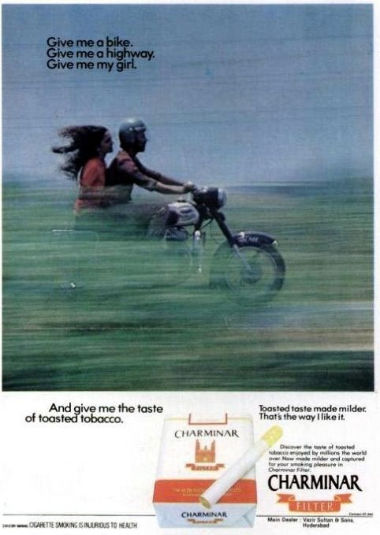
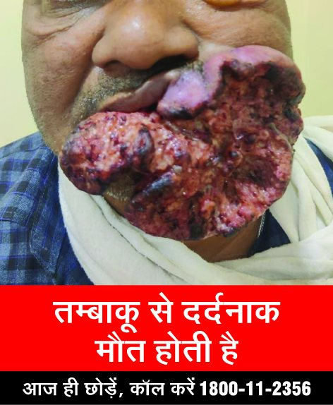
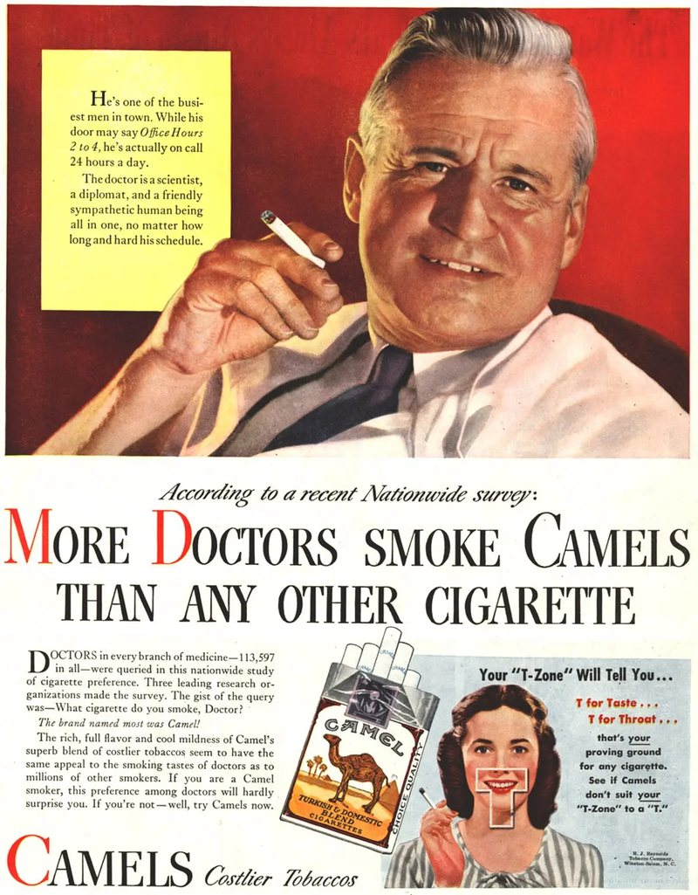
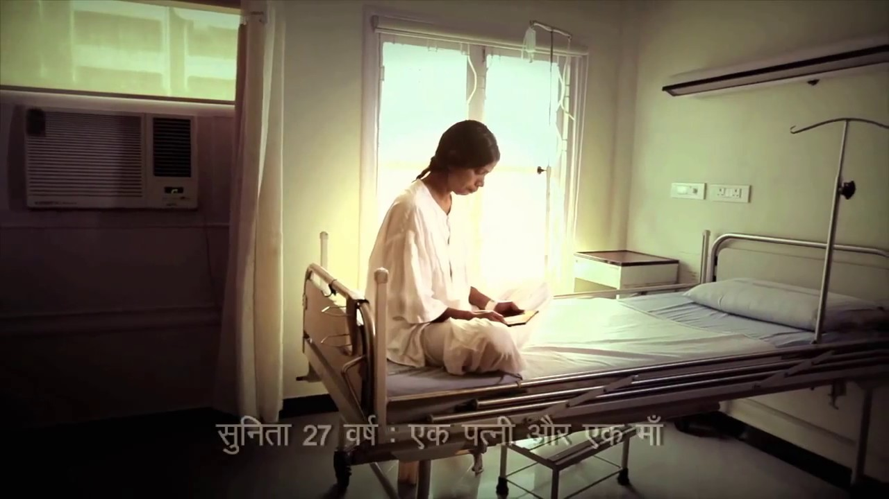
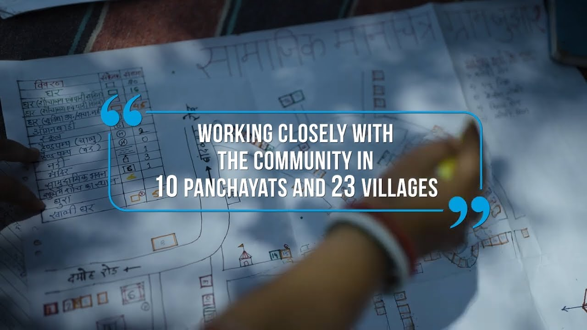
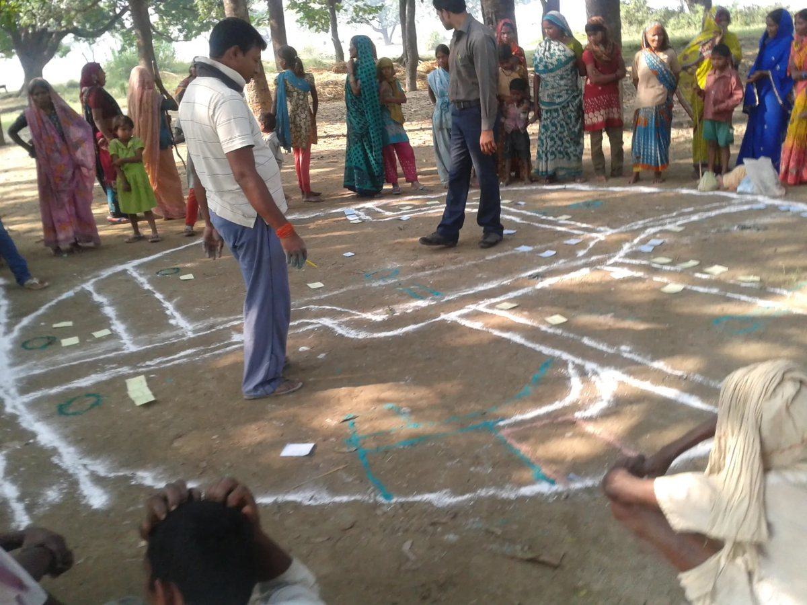
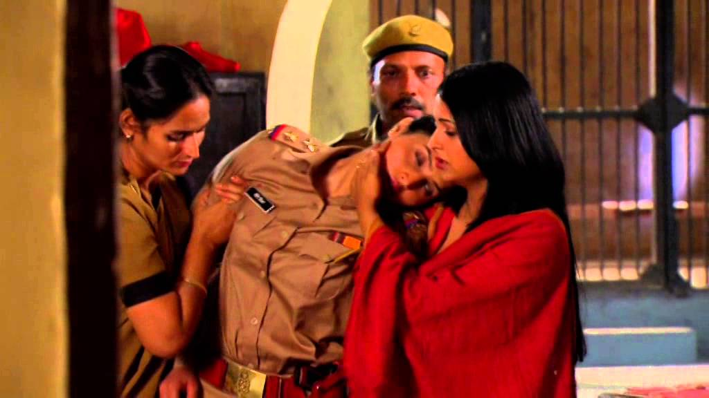
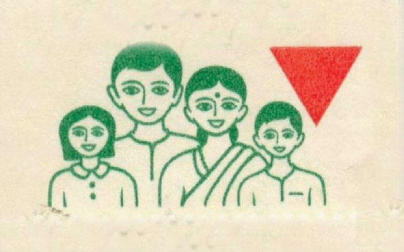

Two cigarette messages, decades apart. Which one is health promotion?
Principles of health promotion, IEC and BCC, found in real campaigns from 1949 to today
AIIMS Bhopal · 60 minutes
Look at both. Which one is health promotion?

Before 2003. A cigarette advertisement. Find the warning.

From 2018. The warning on every pack, 85% of both faces.
Left: Charminar advertisement, Vazir Sultan Tobacco, Indian magazine, before the 2003 ban on tobacco advertising. Right: Ministry of Health and Family Welfare, specified health warning, 2018.
After every clip, the same six questions
1. Who is it for?
Age, sex, place, what they already believe.
2. What should they do?
One action, specific enough to do tomorrow.
3. Why would they believe it?
Who is speaking, and why should we trust them?
4. What feeling does it use?
Fear, disgust, pride, humour, shame, hope.
5. Would it work near Bhopal?
Language, culture, a village or a slum, a man or a woman.
6. What could go wrong?
Who might be hurt, blamed or left out?
1949: who was the most persuasive health communicator?
Smokers anxious about their health, offered reassurance instead of quitting.
Repetition
Radio, magazines, television, for years.
Communication is a tool. It sold cigarettes long before it was used to stop them.

Gardner MN, Brandt AM. "The doctors' choice is America's choice": the physician in US cigarette advertisements, 1930 to 1953. Am J Public Health 2006;96:222-32.
India, 2010s: what makes you believe Sunita?

"Sunita", Hindi testimonial. Vital Strategies with the Ministry of Health. Open on YouTube
Tobacco · Clip 2
Think about
Why do you believe her?
What feeling does it use?
What does it ask you to do?
Who is it for?
Fear works only when people also see a way out
Threat
"This could happen to me, and it would be terrible." Sunita supplies this.
Efficacy
"I know what to do, and I can do it." Quit, call the free quitline, visit a cessation centre.
High threat with high efficacy leads to action. High threat with low efficacy leads people to deny, avoid, or mock the message.
Witte K. Putting the fear back into fear appeals: the extended parallel process model. Commun Monogr 1992;59:329-49.
Mukesh ran before every film for six years. Why was he retired?
From 2012, every cinema and TV channel in India had to show anti-tobacco spots before films. One of them was Mukesh, a young man who died of oral cancer from chewing tobacco. In 2018 the Censor Board replaced it.
Swachh Bharat Mission, from 2014: over 10 crore toilets built.
70% → 44%people defecating in the open, rural Bihar, MP, Rajasthan and UP, 2014 to 2018
23%of people who had a toilet still defecated in the open in 2018
Nationally, about 1 in 5 households still used no toilet facility in 2019-21 (NFHS-5).
Hardware is necessary but not sufficient. Behaviour has to change too, and stay changed.
Gupta A, et al. Changes in open defecation in rural north India: 2014-2018. r.i.c.e. working paper, 2019. NFHS-5 (2019-21), as reported by Deccan Herald, 2022. Toilets built: Ministry of Jal Shakti, PIB, 2019.
Damoh, Madhya Pradesh: who made the change here?

"How Jujhar village became open defecation free", WaterAid India. Open on YouTube
Sanitation · Clip 5
Think about
Who is talking: officials or villagers?
What is the map for?
Who decided?
Will it last?
When the community owns the problem, it owns the solution
Community-led total sanitation
Facilitators do not lecture or hand out toilets. Villagers map their own village, walk to the open defecation sites, and calculate how much faeces they produce. Disgust and self-respect, not subsidy, trigger the decision.
What it adds
Two-way communication. Local leaders and women as messengers. A collective decision, so the norm changes for everyone at once. Follow-up visits after the trigger.

Villagers map their own village on the ground.
From people as targets of messages to people as actors in their own change.
Kar K, Chambers R. Handbook on Community-Led Total Sanitation. Plan UK and Institute of Development Studies, 2008.
Thread 2: hardware, behaviour and the community together
Awareness
Poo2Loo. Starts conversation; reaches the people who least need it.
Norms
Darwaza Band. Social pressure and pride; risk of shaming and coercion.
Community action
Jujhar. The village decides, maps and monitors, with toilets and water supplied.
None of the three works without the toilets. The toilets do not work without the other three.
From "Hum do, hamare do" to a doctor in a TV serial

"Main Kuch Bhi Kar Sakti Hoon", Population Foundation of India, Doordarshan, from 2014. Open on YouTube
Family planning

Think about
The red triangle and a four-word slogan. Why so simple?
A weekly TV drama. Why a story?
What principles did you find?
Call them out. I will write them on the board.
Look back at your six questions. Each one hides a principle.
Nine principles of effective health communication
Know the audience
Segment; do formative research first. Poo2Loo
One clear action
Specific and doable. Darwaza Band
Credible source
Trusted, or like the audience. Camel, Sunita
Emotion with efficacy
Fear only with a way out. Sunita
Cultural fit
Language, values, setting. Hindi testimonials
Repeat, then refresh
Many channels; watch for wear-out. Mukesh
Two-way and participatory
People take part in deciding. Jujhar
Pre-test and evaluate
Test before launch; measure after. GATS, r.i.c.e.
Do no harm
No stigma, shaming or coercion. Darwaza Band
IEC, BCC, SBCC: the three columns, named
Term
Aim
Typical tools
Today's example
IEC
Information, education and communication: raise awareness and knowledge
Posters, slogans, mass media
1975 text warning, Poo2Loo
BCC
Behaviour change communication: change a specific behaviour in a defined audience
World Health Organization. Ottawa Charter for Health Promotion. First International Conference on Health Promotion, Ottawa, 1986.
So, which one is health promotion?
Before 2003
One line of small print, under an advertisement selling freedom and romance. Information, easy to miss.
From 2018
A message made compulsory by law, at the point of use, every time, with a way out printed on it: the quitline.
Both communicate. Only the second is health promotion: policy, environment, emotion and efficacy, in the smoker's hand.
Sources and further reading
World Health Organization. Ottawa Charter for Health Promotion, 1986.
Witte K. Putting the fear back into fear appeals: the extended parallel process model. Commun Monogr 1992;59:329-49.
Gardner MN, Brandt AM. "The doctors' choice is America's choice": the physician in US cigarette advertisements, 1930-1953. Am J Public Health 2006;96:222-32.
Ministry of Health and Family Welfare, TISS. Global Adult Tobacco Survey India (GATS-2) 2016-17, fact sheet.
Cigarettes and Other Tobacco Products Act 2003 and rules; Prohibition of Electronic Cigarettes Act 2019.
exchange4media. CBFC pulls down anti-smoking in-theatre ad after six years, 2018.
Gupta A, et al. Changes in open defecation in rural north India: 2014-2018. r.i.c.e., 2019.
NFHS-5 (2019-21). 19% of households do not use any toilet facility. Deccan Herald, 2022.
Kar K, Chambers R. Handbook on Community-Led Total Sanitation. Plan UK and IDS, 2008.
Images: Charminar advertisement (Vazir Sultan Tobacco); Camel advertisement (R.J. Reynolds, 1940s); MoHFW specified health warnings 2009 and 2018; Swachh Bharat Mission logo; CLTS mapping photograph; family planning red triangle; WHO Ottawa Charter logo.
Clips: Camel (1949); Vital Strategies, Sunita and Mukesh; UNICEF India, Poo2Loo (2014); Swachh Bharat Mission (Grameen), Darwaza Band; WaterAid India, Jujhar village; Population Foundation of India, Main Kuch Bhi Kar Sakti Hoon. All on YouTube; links on each slide.
Prepared at AIIMS Bhopal with Claude (Anthropic) as drafting and coding assistant.